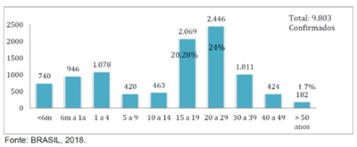
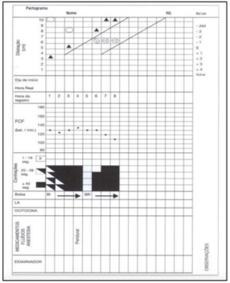
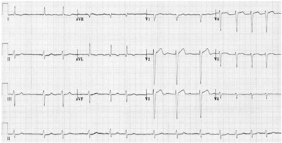
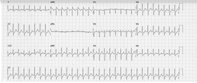

A Vigilância Epidemiológica das Paralisias Flácidas Agudas é de fundamental importância para a detecção da circulação de pólio vírus na população brasileira. Recentemente, no Pará, houve uma noti cação de caso de PFA associada à vacinação pela VOP, 48 horas antes. Em relação às medidas de prevenção da poliomielite na população brasileira, pode-se afirmar:
A OMS define Covid-19 longa como uma síndrome “caracterizada como tal três meses após o início da Covid-19, com sintomas que duram, a partir daí, pelo menos dois meses e não podem ser explicados por um diagnóstico alternativo”. Miranda, DAP, et al. (Transactions of The Royal Society of Tropical Medicine and Hygiene, 2022) publicaram um estudo de corte recente em que acompanharam 646 pacientes durante 14 meses com covid-19, confirmada por RT-PCR. A tabela abaixo mostra a associação entre o sexo o risco de Covid longa. A medida que melhor expressa o excesso de casos de Covid longa atribuível ao sexo Feminino (F) é:
No estado do Amazonas em 2018, houve um processo epidêmico de sarampo, conforme Boletim Epidemiológico do MS, 2018. Abaixo, é mostrado um gráfico com a distribuição por faixa etária dos casos de sarampo no estado do AM em 2018: A partir desses dados, o MS instituiu a vacinação contra o sarampo a partir dos 6 meses de idade (dose 0), em situação de epidemia, e, depois a vacinação recomendada aos 12 e 15 meses. Que explicação epidemiológica você daria para os casos de sarampo abaixo de 1 ano?

Um teste rápido para Doença de Chagas está sendo testado em dois municípios do estado do PA. É utilizado da mesma forma e pela mesma equipe nos dois municípios, mas a quantidade de resultados falso-positivos entre aqueles que testam positivo no município A é maior do que entre aqueles que testam positivo na população B, considerando-se o teste de Elisa pelo IEC como padrão ouro. Que explicação você considera a mais provável para este achado?
Em um estudo de coorte de diarreia em menores de 1 ano, encontrou-se a taxa de incidência na população de estudo (n=- 100) igual a 25%. Considerando-se que, entre as 50 crianças que tiveram desmame precoce, 15 apresentaram diarreia e 5, entre os não expostos. Qual é a fração de casos com a doença nessa população atribuível à exposição?
“...Muitas doenças são complexas e multifatoriais, exigindo uma abordagem diferente da lógica linear e da tecnologia que podem funcionar tão bem em doenças com uma etiologia especí ca. Experiências de doença como dor crônica, transtornos alimentares, depressão e adição têm uma dimensão existencial que precisa ser levada em conta para que sejam entendidas. Devemos prestar atenção ao sofrimento das pessoas, às suas emoções, crenças e relacionamentos, não apenas por razões humanitárias, mas também porque têm um importante papel na origem das doenças (Foss, 2002).” Sobre o Método Clínico Centrado na Pessoa, pode-se afirmar:
Revisar: possível letra faltando em enunciado
Jovem de 22 anos, chega à UBS com quadro de diagnóstico de depressão há 4 anos, apresentando quadro atual mais intenso sem sintomas psicóticos. Esse ao ser indagado, relata desesperança com sua vida e que pensa em “acabar com tudo isso, mas ainda não teve coragem”. Com relação à ideação suicida, qual a conduta a ser tomada?
Mulher, 47 anos, hipertensa, tabagista e sedentária, vem à consulta na UBS com desejo de iniciar atividade física, pois seu irmão, de 52 anos, infartou e está com receio de infartar também. Relatou leve dor no peito de forma ocasional, nos últimos 6 meses, mas acredita que seja de origem muscular. Pai morreu de IAM, aos 43 anos de idade. Relata que se matriculou na aula de dança, porém precisa de atestado. A última consulta dela foi há 13 meses, quando realizou todos os rastreamentos oportunos para idade e condições de saúde, estando todos normais. Que procedimentos o médico deve realizar para liberar a paciente para a atividade física?
Sobre o tratamento da Infecção Latente pelo Mycobacterium tuberculosis (ILTB), podemos afirmar:
Os atributos da APS são fortalecidos pelo Pagamento por Desempenho do Programa Previne Brasil, o que induz o aprimoramento dos processos de trabalho e à quali cação dos resultados em saúde, além de otimizar aspectos como periodicidade e método da avaliação. Exemplo disso é que, por meio do monitoramento desses indicadores, podem ser avaliados os acessos à qualidade e à resolutividade dos serviços prestados pelas eSF/eAP, fornecendo subsídios para medidas de aprimoramento das ações e dando mais transparência aos investimentos na área da saúde para a sociedade. FONTE: Ministério da Saúde/SAPS. Para 2022, temos como indicador avaliado para essas equipes:
Menino, 4 anos, procedente da zona rural, apresenta há 5 semanas, lesões no couro cabeludo que iniciaram com prurido, descamação e área de alopecia. Uma das lesões apresentou crescimento rápido evoluindo com característica inflamatória exuberante com formação de pústulas, micro abscessos e adenomegalia retroauricular direita. O tratamento adequado para o caso é:
Menino, 2 anos, procedente da zona rural, é trazido à UBS por apresentar “tumoração” na região anal há duas semanas, além de dor abdominal recorrente, diminuição do apetite e vômitos ocasionais. Ao exame físico, o médico constata tratar- se de prolapso retal, com a presença de pequenos vermes aderidos à mucosa. Assinale a parasitose intestinal nesse caso:
A poliomielite é uma doença altamente contagiosa, causada pelo poliovírus selvagem e que afeta principalmente as crianças menores de 5 anos de idade. O principal fator de risco, para que as crianças menores de 5 anos adquiram a doença, é a baixa cobertura vacinal. As vacinas utilizadas no momento são a VOP (vacina oral contra a poliomielite) e VIP (vacina inativada contra a poliomielite). No Brasil, o Ministério da Saúde estabelece o seguinte esquema vacinal contra a doença:
Menina, 1 ano e 4 meses, apresenta febre elevada, mal-estar, prostração e coriza há 4 dias. Mãe refere surgimento de exantema maculopapular na região retroauricular que se estendeu de forma craniocaudal, com manutenção da febre e acentuação dos sintomas gerais com rinorreia purulenta, olhos avermelhados e com secreção. Criança profundamente toxemiada. Calendário vacinal incompleto (menor não realizou as vacinas de 1 ano e nem as de 15 meses). A complicação bacteriana mais frequente nessa patologia é:
Um recém-nascido de 37 semanas e 2 dias, peso de 2.480 gramas e comprimento de 47 centímetros ao nascimento, vem à primeira consulta de rotina, agora com 9 dias de vida. Está sendo alimentado com leite materno exclusivo e a mãe refere boa pega e mamadas e cientes. Até o momento ainda não iniciou nenhuma suplementação vitamínica. Ao exame físico, o peso atual é de 2.310 gramas e a estatura de 48 centímetros. Nenhuma outra alteração ao exame físico. Qual seria a sua conduta neste caso?
Revisar: possível letra faltando em enunciado
Lactente de 5 meses de vida vem à consulta de rotina acompanhado de sua mãe, que pede que você a oriente sobre a alimentação de seu lho a partir desse momento, pois ela irá retornar ao trabalho e passará o dia todo fora de casa. A criança nasceu de 39 semanas, parto vaginal, pesando 3.450 gramas e medindo 50cm, sem intercorrências. Até o presente momento, foi alimentado exclusivamente de leite materno em livre demanda. De acordo com as informações acima e baseado no guia alimentar para menores de 2 anos do Ministério da Saúde, assinale as afirmativas corretas: I. – A introdução alimentar deverá ser iniciada nesse momento com papa de frutas 2 vezes ao dia, além de manter leite materno ordenhado em livre demanda. A papa principal deve ser iniciado após os 6 meses. II. – Leite materno ordenhado exclusivamente é a melhor opção para alimentação desse lactente. Na impossibilidade da ordenha, fórmula infantil de partida é o mais indicado até os 6 meses. III. – Fórmula infantil deve ser a primeira opção nesse caso, pois o volume de leite materno ordenhado não será su ciente para alimentar a criança no período em que a mãe não estiver presente. IV. – A introdução alimentar deverá iniciar aos 6 meses de vida, com papas de frutas 2 vezes ao dia, seguido de papa principal no almoço e jantar. V. – A papa principal deve ser composta por 50% de verduras e legumes, 25% de proteína animal, 12,5% de leguminosas e 12,5% de carboidrato.
Revisar: possível letra faltando em enunciado
Recém-nascida do sexo feminino, 36 semanas e 6 dias, parto cesárea, apresenta no primeiro minuto de vida APGAR de 4. De acordo com as Diretrizes de 2022 da Sociedade Brasileira de Pediatria sobre reanimação do recém- nascido ≥34 semanas em sala de parto, é correto afirmar:
Menino, de 3 anos e 7 meses, há 3 dias com quadro de febre alta não aferida, tosse produtiva, congestão nasal intensa com rinorreia abundante amarelo-esverdeada, diminuição do apetite, mas aceita bem água e sucos. A genitora nega vômitos, diarreia ou convulsões. Ao exame físico: consciente, hipoativo, hidratado, taquipneico, perfusão capilar 2 segundos. FR 40 irpm, ausência de tiragem subcostal. Ausculta pulmonar: estertores crepitantes em bases bilateralmente. Ausculta cardíaca: Bulhas normofonéticas, ausência de sopros. Abdome: ácido, sem visceromegalias. Vacinação atualizada. De acordo com o quadro clínico acima, assinale a alternativa correta:
Mulher, 19 anos, G1P0A0, sem pré-natal, procedente da zona rural em trabalho de parto é referenciada à maternidade. Após anamnese, a gestante foi submetida à coleta de exames: Teste rápido (TR) para HIV: NÃO REAGENTE, TR para sí lis: REAGENTE, TR para hepatite B e C: NÃO REAGENTES, VDRL 1/16. Mãe nega tratamento anterior para sífilis. RN nasceu de parto normal, Apgar 9/9, peso 2600, Capurro 39 semanas. Foi colocado junto à mãe para sugar o seio materno. Efetuado os demais cuidados de rotina sendo encaminhado para o alojamento conjunto acompanhando sua mãe. Exame físico sem alterações. Exames do RN: VDRL 1/2, punção liquórica sem alterações com VDRL NÃO REAGENTE, escore hematológico de RODWELL:2, Raio X de ossos longos normal. De acordo com o quadro clínico e laboratorial, assinale a alternativa CORRETA:
Menina, 3 anos, frequenta creche. há 3 dias com congestão nasal, rinorreia hialina, espirros frequentes, odinofagia, tosse seca e otalgia intensa. Hoje iniciou quadro de febre alta não aferida e os olhos amanheceram com muita secreção purulenta. Mãe nega vômitos, diarreia, alergias e uso de antibióticos nos últimos 3 meses. Vacinação atualizada. Pai é asmático. Mãe tem diabetes. Ao exame físico: consciente, fácies de dor, eupneica. Olhos com abundante secreção amarela de consistência espessa. Frequência respiratória 25 irpm. Ausculta pulmonar: murmúrio vesicular siológico, ausência de estertores. Orofaringe: hipertro a de tonsilas grau 2/3 com hiperemia. Otoscopia: abaulamento da membrana timpânica bilateralmente. Ausculta cardíaca: bulhas normofonéticas, ausência de sopros. Abdome ácido, sem visceromegalias. De acordo com o quadro clínico acima, assinale a alternativa correta:
A condição clínica, conhecida por “Abdome agudo”, pode se apresentar de diversas maneiras dependendo de sua etiologia. A abordagem inicial adequada é imprescindível para o melhore desfecho. Portanto, analise as alternativas abaixo e marque a que contenha afirmativas verdadeiras sobre o tema em questão:
Criança de 10 anos, masculino, subfebril, anorético há 24h com dor epigástrica inicialmente que migrou para FID onde persiste mantendo dor no local. No exame laboratorial (Hmg) identi ca-se leucocitose discreta com desvio à esquerda, assim como, descompressão brusca positiva em FID. Levando em consideração os critérios clínicos de ALVARADO para diagnóstico de apendicite aguda, qual alternativa estaria mais adequada ao interpretarmos os dados clínicos acima?
Revisar: possível letra faltando em enunciado
Paciente mulher 26 anos, chega ao PS com dor lombar D, tipo cólica, de forte intensidade e início súbito. Náuseas e vômitos presentes, irradiação para grandes lábios e parede vaginal ipsilateral. BEG, algo taquicárdica, pouco sudoreica, sem febre, com abdome plano pouco doloroso, sem sinais de peritonismo e com sinal de Giordano positivo à direita. Marque a alternativa correta em relação à principal hipótese diagnóstica e condutas iniciais recomendadas.
Na condução da doença diverticular aguda pela classificação de Hinchey, qual a alternativa que melhor identi ca o tratamento mais correto:
Revisar: possível letra faltando em enunciado
Paciente de 45 anos, submetida à colecistectomia VLP há 8 meses, procura atendimento médico por dor abdominal em andar superior do abdome com início há 1 semana, náuseas e vômitos pós-prandiais, astenia e picos febris intermitentes presentes. Ao exame físico, prostrada, icterícia cutaneomucosa ++/++++, subfebril, levemente taquicárdica e taquipneica, com abdome plano, porém doloroso em HD e epigástrio. Em posse dessas informações clínicas, em qual alternativa podemos encontrar a melhor interpretação clínica e sequência para investigação diagnóstica?
O tratamento definitivo de todas as hérnias independente de origem ou tipo, é o reparo cirúrgico. Em torno de 20 milhões de hérnias inguinais ou femorais são tratadas cirurgicamente por ano em todo o mundo. Em se tratando das técnicas de reparo, em qual alternativas identificamos a descrição correta?
Paciente de 60 anos, operado em caráter de emergência por quadro suboclusivo intestinal (Tumor de ceco), tendo sido realizada colectomia D com ileostomia terminal. No quinto dia de pós-operatório encontrava-se estável, já em programação de alta hospitalar quando houve piora clínica, apresentando náuseas, vômitos, distensão abdominal e câimbras. O paciente estava em REG, afebril, hipocorado +/3 e desidratado ++/4. Abdome moderadamente distendido, timpânico, sem sinais de peritonismo, estoma bem perfundido, funcional, porém com volume diminuído em relação às últimas 48h, chamando atenção para os RHA (ruídos hidroaéreos) hipoativos. Considerando o quadro decorrente de íleo paralítico como hipótese, e que o principal eletrólito alterado no controle laboratorial foi o potássio, com níveis séricos de 2,3 mEq/L, podemos considerar das alternativas abaixo, qual a correta?
A Pancreatite aguda, de acordo com a classificação de ATLANTA, encontra-se dividida em dois grandes grupos: pancreatite aguda edematosa intersticial e pancreatite aguda necrotizante. Em relação aos aspectos de gravidade, qual alternativa se encontra correta?
Paciente de 48 anos sabidamente portador de hipertensão portal em investigação etiológica, contudo já apresentando varizes esofágicas de médio e grosso calibres, ao ser atendido no PS por ter apresentado sangramento importante (3 episódios de hematêmese nas últimas 4h). Dentre as medidas gerais de tratamento para estabilização clínica listadas abaixo, podemos considerar adequada:
Thomson, em 1975, descreveu as hemorroidas como sendo coxins vasculares compostos por arteríolas, sinusoides e vênulas sustentados por tecido bromuscular. Em torno de 5% da população geral apresenta sintomas relacionados à doença hemorroidária, sendo que na maioria das vezes, o tratamento conservador com medidas locais e dietéticas é preferível. Contudo as indicações de tratamento cirúrgico na doença hemorroidária encontram-se mais adequadamente representada na alternativa:
S.C.V, 18 anos de idade, G1 P0 A1, soropositiva para o vírus da imunode ciência humana e em tratamento antirretroviral, vem à consulta médica com resultado de contagem de linfócitos CD4+ abaixo no valor de 180 células/mm3. A paciente refere preocupação quanto ao risco de câncer de colo do útero. Diante do caso clínico, a conduta correta de acordo com as Diretrizes Brasileiras para o Rastreamento do Câncer do Colo do Útero é:
Paciente de 49 anos de idade, refere fogachos diários que iniciaram há 1 ano. Nega outras queixas. A data da última menstruação foi há 9 meses. Apresenta de antecedentes mórbidos pessoais por ria e hipertensão arterial sistêmica controlados. Mamogra a recente com laudo BIRADS 1, colpocitologia oncótica negativa para malignidade e ultrassonogra a transvaginal sem alterações patológicas. Quanto a terapia de reposição hormonal para esta paciente a conduta mais adequada é:
Uma mulher de 24 anos de idade, G2P0A1, no decorrer de 41 semanas de gestação, encontrase em fase ativa do trabalho de parto, está fazendo força, mas sem progresso. O desenvolvimento do trabalho de parto está caracterizado no partograma abaixo. A análise adequada do caso clínico é:

L.A.N, 22 anos de idade, apresenta ciclos menstruais irregulares há cerca de 14 meses, com períodos de amenorreia. Quando indagada, negou uso de medicações de uso contínuo e está sem vida sexual ativa há 2 anos. Exame físico geral e ginecológico sem alterações. A dosagem de prolactina está elevada (180 ng/dl) com TSH e T4 livre normais. A ressonância magnética de sela túrcica revelou um adenoma hipofisário de 17mm de diâmetro. A melhor conduta para o caso é:
Paciente de 26 anos de idade, estudante, vem à consulta com queixa de mastalgia há 02 semanas. Refere ciclos menstruais a cada 29 dias e que a sua queixa piora próximo a menstruação e melhora durante a primeira fase do ciclo. Faz uso de anel vaginal segundo informações. Nega traumas ou afecções mamárias prévias, relata histórico de câncer de mama em prima de 20 grau. Ao exame físico: mamas em número de 02, simétricas, sem lesões palpáveis, dor a palpação em quadrante superior lateral bilateralmente, ausência de descarga papilar bilateralmente, axilas livres. A conduta para o caso é:
Gestante com Sí lis Primária, 17 semanas de gravidez, com resultado de laboratório, VDRL 1:16. Sabemos que a transmissão vertical é possível, qual a medida terapêutica de escolha para este caso?
As modificações hormonais no período gravídico – puerperal são determinadas por que fatores?
Grávida de 34 semanas, chega à Triagem da Santa Casa, referindo cefaleia frontal, epigastralgias, escotomas visuais, edema acentuado de membros inferiores, face e oliguria. AO Exame: PA 190 X 120 mmHg AU: 30 cm BCF: 152 bpm DU: ausente. Toque vaginal não realizado. Diante do quadro apresentado acima, qual a hipótese diagnóstica e qual a conduta de imediato?
Paciente GII PI N AI, obesa, deu entrada na UPA do Guamá, referindo dor no baixo ventre, semelhante à cólica menstrual e sangramento vaginal aumentado, após 4 meses de amenorreia. Refere que engordou 30 kg na sua gravidez e não conseguiu emagrecer desde então, atualmente com IMC de 40. Ao exame: Abdome globoso, com massa palpável em região hipogástrica. Toque bimanual: Colo congesto, impérvio, útero aumentado de volume, no limite da sín se púbica, sangramento moderado vermelho vivo. O que fazer neste caso?
Paciente primigesta admitida em trabalho de parto, período expulsivo, foi submetida à Manobra de Gunn – Zavanelli- O’Leary para finalmente nascer o seu bebê. Em que consiste essa manobra?
Mulher, 24 anos, vai ao consultório referindo que há 4 meses apresenta cefaleia unilateral, latejante, com fotofobia e náuseas. Melhora com uso de dipirona e piora ao subir escadas. Tem tido 2 episódios/semana, que chegam a durar cerca de 6 horas e já atrapalham suas atividades de trabalho. Tem histórico de alguns episódios de broncoespasmo em vigência de quadros gripais e já fez cirurgia de apendicectomia. Menstruação regular. Ao exame: IMC (índice de massa corpórea): 27kg / m²; PA: 130x80; nuca livre, sem sinais neurológicos focais. Analise as assertivas a seguir e marque a alternativa com hipótese diagnostica e tratamento mais adequados ao caso:
Paciente idoso, apresentando episódios de vertigem subjetiva, de menos de 1 minuto, quando muda a cabeça em certas posições, associados a náuseas e nistagmo. Algumas vezes teve desequilíbrio e já caiu uma vez. Nega zumbido e hipoacusia. Já fez Ressonância de crânio que foi normal para a idade. Sobre este caso, marque a alternativa CORRETA:
Mulher com 57 anos e trabalha como faxineira. Procura atendimento devido queixa de dor articular em mãos e joelhos. Relata rigidez matinal que melhora em menos de 20 minutos com as atividades da manhã. Ao exame das mãos observa-se deformidade nas articulações interfalangianas, sem sinais de sinovite. Joelho direito com leve edema e calor, com crepitação à movimentação. Joelho esquerdo sem alterações. A condução mais adequada para o caso é:
Inibidores da enzima conversora de angiotensina e bloqueadores dos receptores AT1 da angiotensina II Paciente com 62 anos, hipertensa em uso de losartana e hidroclorotiazida em dose plena e diabética em uso do Glifage XR® 2g/dia. Nos últimos meses, vinha se sentindo cansada aos esforços. Seu médico assistente resolveu solicitar um ecocardiograma que mostrou uma fração de ejeção de 42%. Ao exame físico apresentava PA de 140x90mmHg, FC:88bpm, FR:16irpm, ausculta cardiopulmonar normal, sem edema de membros inferiores. HBA1C: 7,6%, Cr:1,0mg/dL, K:4,5mg/dL, ClCr:60ml//min/1.73m² microalbuminuria de 100mg/g. Assinale a alternativa que contêm a melhor conduta para a paciente seria acrescentar:
Mulher, 62 anos, comparece à consulta queixando de plenitude pós-prandial e saciedade precoce há 3 meses. Nega perda de peso, vômitos, dor epigástrica ou alteração na cor ou consistência das fezes. Exame físico sem alterações. A conduta mais adequada para este paciente é:
Mulher, 65 anos, hipertensa em uso de anlodipino 10mg/dia e losartana 50mg 12/12hs, refere episódios de palpitações com início há quatro meses, por vezes acompanhados de leve dispneia. Não relata relação com esforços ou outros fatores desencadeantes. Nega angina, síncope, ortopneia ou dispneia aos esforços. Nega etilismo ou tabagismo. Exame físico: bom estado geral, consciente, eupneica, bulhas cardíacas com ritmo irregular, FC: 52 bpm e PA: 140x80 mmHg, com restante do exame sem alterações. Eletrocardiograma vide figura abaixo. A melhor estratégia terapêutica para este paciente é:

Homem, 46 anos de idade evolui há 4 dias com febre (38,9ºC), tosse produtiva com expectoração purulenta, o quadro iniciou há 6 dias com rinorreia e mal-estar geral. Estava em uso apenas de dipirona para febre. Não procurou auxílio médico até a data de hoje. Nega doenças prévias, uso de antibióticos ou internações recentes. Ao exame físico: Consciente e orientado, hidratado, acianótico, anictérico. AC: ritmo cardíaco regular em 2 tempos sem sopros FC: 98 bpm PA: 110 x 70mmHg Ausculta pulmonar limpa FR: 18 ipm sem outras alterações no exame físico. O aparelho de RX está quebrado. Sobre o caso é correto afirmar:
Homem 48 anos, assintomático, mas com sobrepeso, Circunferência abdominal de 105cm e história familiar de diabetes. Tem tentado mudanças de estilo de vida (MEV) desde a última consulta há 6 meses: caminhando 5x na semana 50 minutos e acompanhando com nutricionista. Trouxe exames: A conduta mais indicada para a paciente é:
Mulher, 28 anos, chega ao pronto-socorro referindo que o coração está acelerado, gerando uma leve dispneia. Conta que iniciou enquanto varria a casa. Relata que não é a primeira vez que acontece, mas é a primeira vez que o quadro permanece por mais de 10 minutos. Ao Exame físico: Glasgow15, FR:22irpm, FC:180bpm, PA:120x70mmHg, SatO2:94%, glicemia capilar:95. Ausculta pulmonar normal. Sem outras alterações no exame físico. ECG realizado durante o atendimento a seguir: A conduta inicial indicada pela American Heart Asssociation para esta paciente é:

Mulher, 58 anos, diabética, foi ao PS devido quadro de cefaleia, mal-estar geral e febre há 2 dias. A hipótese diagnóstica feita pelo médico foi de dengue. A paciente realizou sintomáticos no PS e foi liberada. Após 5 dias, a paciente evoluiu com persistência da febre, tosse seca, sonolência e desorientação. Retornou ao PS e, ao exame físico, apresentava regular estado geral, febril ao toque, ausculta cardíaca normal, PA 80/40mmHg, FC 130bpm, ausculta pulmonar com murmúrio vesicular diminuído em base esquerda, FR 32irpm, abdome inocente e extremidades frias. Sobre este caso é correto afirmar: Respostas: 1 12 23 34 45